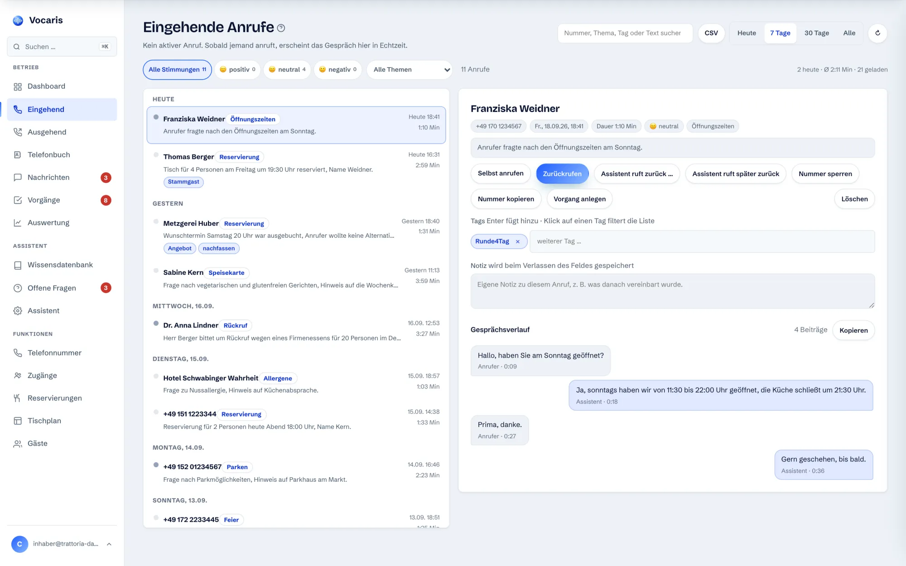
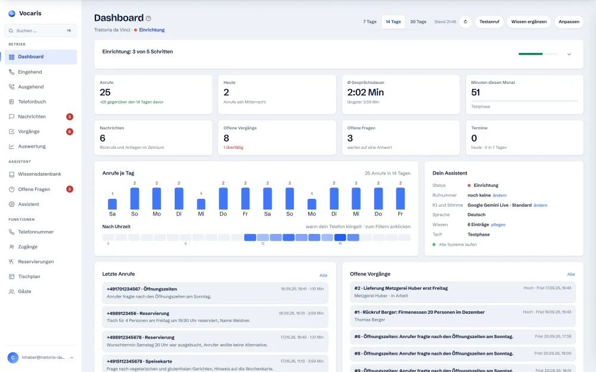
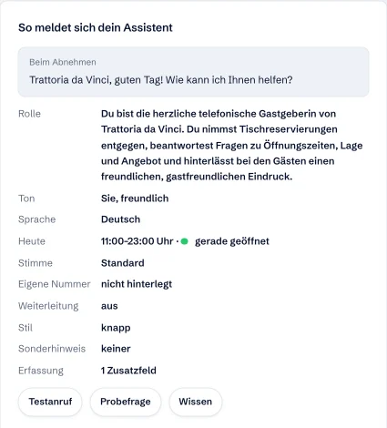
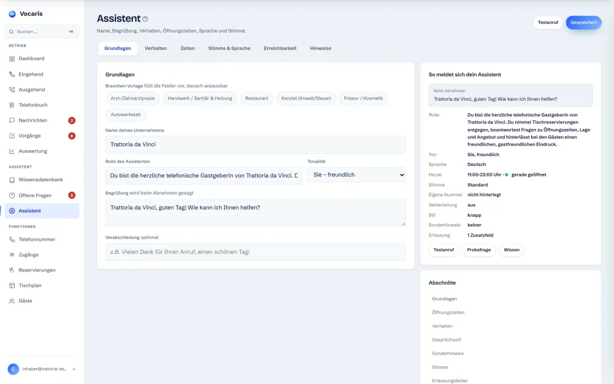
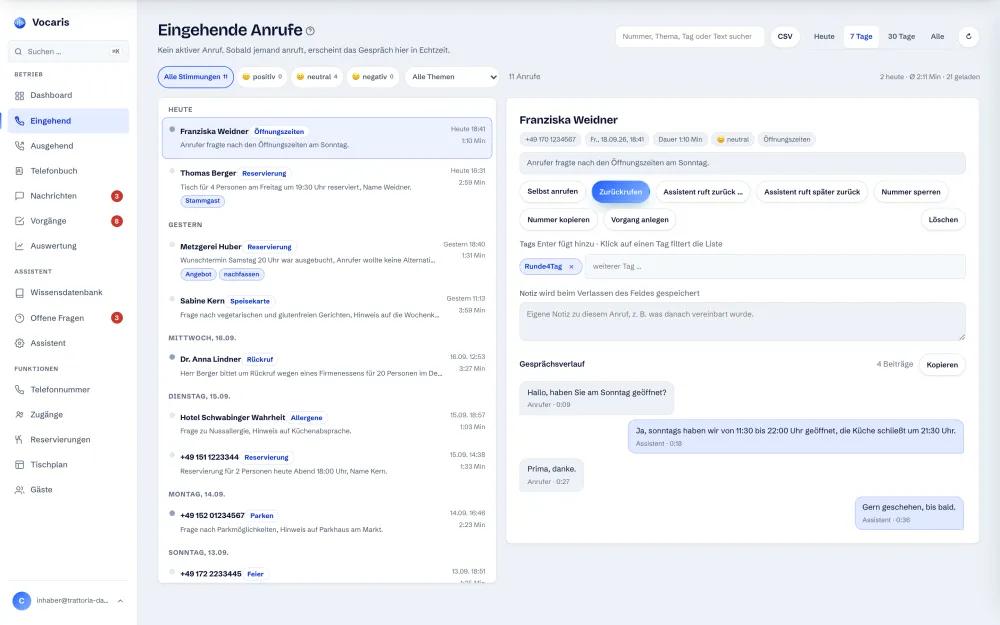
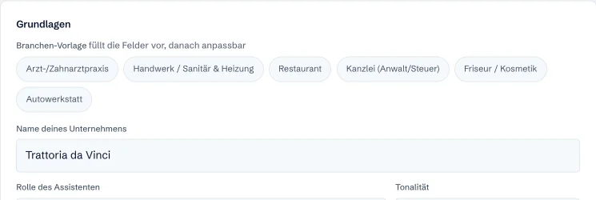
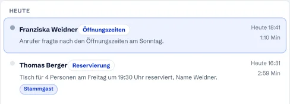
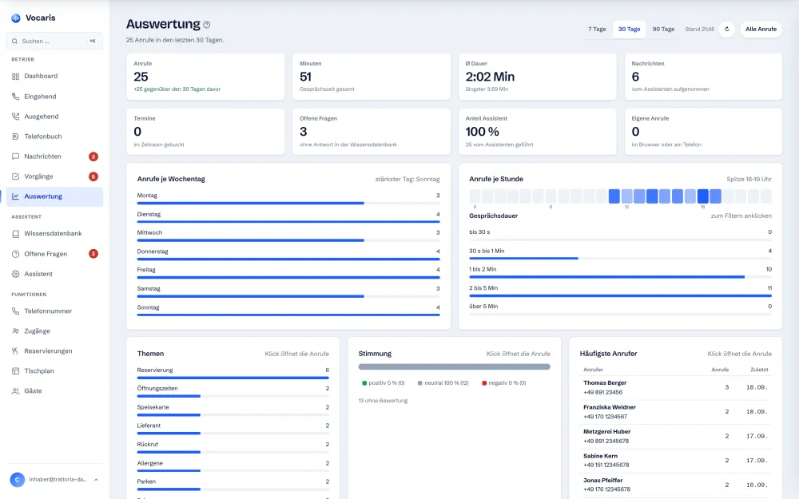
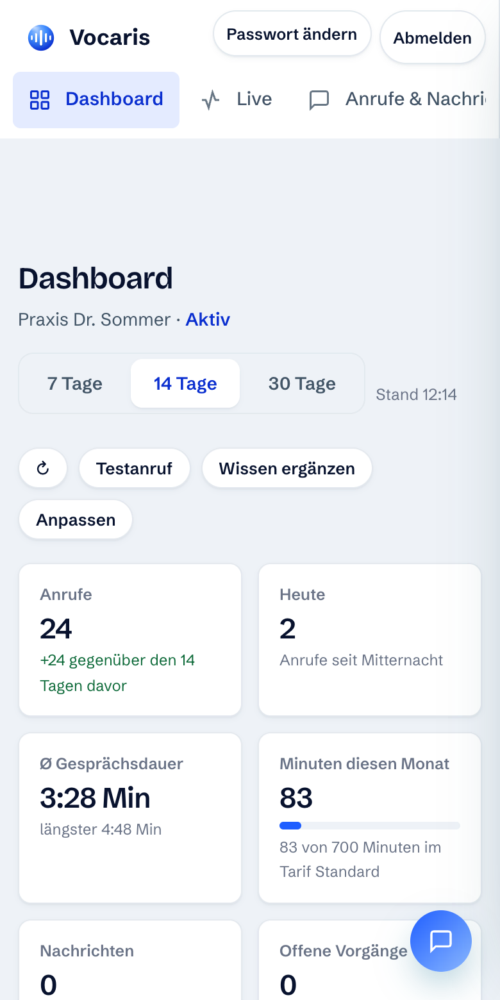

Versteht. Handelt. Lernt dazu.
Vocaris führt jedes Gespräch zu Ende und erledigt dabei, worum es geht: Termine, Nachrichten mit den Angaben, die Sie brauchen, Weiterleitung nach Thema. Danach eine E-Mail mit Zusammenfassung, montags der Wochenbericht. Was er nicht beantworten kann, landet als offene Frage bei Ihnen.
- Alles in jedem Tarif enthalten
- Kein Anrufbeantworter, ein Gespräch
- Alles im Browser, nichts zu installieren

Was Vocaris übernimmt.
Die Funktionen in fünf Gruppen: wie er spricht, was er weiß, wie er Sie informiert, wie Ihr Team damit arbeitet und was mit den Daten passiert. Jede Karte zeigt auf Wunsch, wie es im Kundenbereich aussieht.
Versteht, fragt nach, erledigt.
Am Ende jedes Anrufs steht ein Ergebnis: ein Termin, eine Nachricht mit allem, was Sie brauchen, oder ein Mensch am Apparat.
Bucht Termine und reserviert Tische
Direkt im Gespräch, mit Blick auf Ihren Kalender oder Tischplan. Bestätigung per SMS oder E-Mail. Freie Zeiten prüft er, bevor er zusagt.
Im Kundenbereich so
Jeder gebuchte Termin erscheint als Kachel auf dem Dashboard und im verbundenen Kalender. Reservierungen landen im Tischplan.

Verbindet zu Menschen, nach Thema
Nimmt Rückrufe und Nachrichten auf, erkennt Notfälle nach Ihren Regeln und stellt durch. Sie hinterlegen mehrere Weiterleitungsziele mit Thema, etwa Notdienst, Buchhaltung oder Chef, und der Assistent wählt das passende. Störer sperren Sie mit einem Klick.
Im Kundenbereich so
Unter Assistent stehen Weiterleitung, Stil und Sonderhinweis auf einen Blick; die Ziele tragen Sie mit Thema und Nummer ein.

Tastenmenü, wenn es schnell gehen soll
Wer nicht reden will, drückt eine Taste: 1 für den Vertrieb, 2 für den Notdienst. Vocaris stellt sofort durch, ohne Rückfrage. Der Assistent nennt das Menü von sich aus, wenn jemand einen Menschen sprechen möchte.
Im Kundenbereich so
Jedes Weiterleitungsziel bekommt auf Wunsch eine Taste. Die Ansage baut der Assistent selbst aus Ihren Zielen, Sie müssen nichts aufsprechen.
Erfasst, was Sie brauchen
Kundennummer, Objekt, Auftragsnummer, Kennzeichen: Sie legen frei fest, welche Angaben der Assistent bei jeder Nachricht abfragt und welche Pflicht sind. Die Felder stehen dann strukturiert in Nachricht, Vorgang und Schnittstelle.
Im Kundenbereich so
Die Erfassungsfelder legen Sie unter Assistent an; die Zusammenfassung zeigt, wie viele Zusatzfelder aktiv sind.
Sonderhinweis mit Gültigkeit
Betriebsferien, Störung, geänderte Sprechzeiten: Sie tragen den Hinweis mit Von-bis-Datum ein. Der Assistent sagt ihn jedem Anrufer, den er betrifft, unaufgefordert. Nach Ablauf verschwindet er von selbst.
Im Kundenbereich so
Ein Textfeld mit Von- und Bis-Datum unter Assistent → Hinweise. Läuft der Zeitraum ab, ist der Hinweis wieder aus.
Gesprächsstil nach Wahl
Knapp, normal oder ausführlich. Eine Praxis will kurze Sätze und schnelle Terminvergabe, ein Makler darf Hintergründe erklären. Ein Schalter, gilt sofort für alle Gespräche.
Im Kundenbereich so
Die Einstellungen des Assistenten sind in Reiter gegliedert: Grundlagen, Verhalten, Zeiten, Stimme und Sprache, Erreichbarkeit, Hinweise.

Ruft selbst an, sofort oder geplant
Erinnerungen, Nachrücker von der Warteliste, Rückrufe: Sie geben in einem Satz mit, was zu klären ist, Vocaris stellt sich vor, nennt den Grund und erledigt es. Auf Wunsch zu einer festen Uhrzeit, etwa Frau Berger morgen um 14 Uhr. Zusammenfassung danach in der Verwaltung.
Im Kundenbereich so
Bei jedem Anruf stehen die Knöpfe Assistent ruft zurück und Assistent ruft später zurück direkt neben der Zusammenfassung.

Auch Ihre eigenen Anrufe
Eingehend und ausgehend sind zwei Bereiche mit eigenem Wählfeld. Vorgabe ist der Anruf im Browser über Ihr Headset; alternativ ruft Vocaris zuerst Ihr Telefon an und verbindet dann. Der Kunde sieht immer Ihre Firmennummer, nicht Ihr Handy. Mitschrift und Zusammenfassung gibt es für beide Richtungen.
Im Kundenbereich so
Links im Menü: Eingehend und Ausgehend als eigene Bereiche, daneben das Telefonbuch.
Mehrsprachig von selbst
Erkennt die Sprache des Anrufers und antwortet passend, für Hotels, Shops und Praxen mit internationalen Kunden.
Im Kundenbereich so
Sprache und Stimme stehen in der Zusammenfassung des Assistenten; die Hauptsprache legen Sie fest, Fremdsprachen erkennt er im Gespräch.
Sprachweg GPT-Live mit Werkzeugen
Neben dem europäischen Weg steht GPT-Live von OpenAI zur Wahl. Das Modell hört und spricht gleichzeitig: Wer dazwischenredet, wird sofort verstanden. Termine, Nachrichten und Weiterleitung funktionieren auf diesem Weg genauso, weil der Assistent dieselben Werkzeuge nutzt. Umschalten in den Einstellungen. Mehr auf der Seite KI-Modelle.
Im Kundenbereich so
Unter Assistent → Stimme und Sprache wählen Sie den Sprachweg je Rufnummer. Voreinstellung ist der europäische Weg.
Kennt Ihren Betrieb und Ihre Anrufer.
Der Assistent antwortet nur mit dem, was Sie hinterlegt haben. Das Hinterlegen geht schnell und wird mit jedem Anruf einfacher.
Wissensbasis aus Website, PDF oder Foto
Sie geben die Adresse Ihrer Website an oder laden Preisliste, Speisekarte oder Flyer hoch. Die KI baut daraus die Wissensbasis, Sie prüfen und ergänzen. Öffnungszeiten, Anfahrt, Leistungen, Preise: alles, was am Telefon gefragt wird.
Im Kundenbereich so
Beim Einrichten füllt eine Branchen-Vorlage Rolle und Begrüßung vor, danach lesen Sie Ihr Wissen ein.

Lernt aus jedem Anruf
Offene Frage erkannt, Antwortentwurf von der KI, Sie geben frei. Die Wissensbasis wächst, ohne dass Sie tippen.
Im Kundenbereich so
Das Dashboard zählt die offenen Fragen; ein Klick öffnet sie mit dem Antwortentwurf.
Glossar für Namen und Fachbegriffe
Dr. Nguyen, Osteopathie, Ihr Ortsteil: Sie hinterlegen Schreibweise und Aussprache einmal, und der Assistent spricht und schreibt es richtig, in Gespräch, Mitschrift und Zusammenfassung.
Im Kundenbereich so
Das Glossar ist ein Abschnitt des Assistenten: je Eintrag Schreibweise, Aussprache und ein kurzer Hinweis, was gemeint ist.
Telefonbuch mit Anruferkennung
Ein Telefonbuch je Firma mit Name, Nummer, Firma und Notiz. Ruft eine bekannte Nummer an, begrüßt Vocaris die Person mit Namen und fragt nicht nach, was schon hinterlegt ist. In den Anruflisten stehen Namen statt Nummern. Import aus CSV, Export als CSV oder vCard. Wer ein CRM hat, bindet es auf der Seite Schnittstellen an.
Im Kundenbereich so
In der Anrufliste steht der Name aus dem Telefonbuch, dazu Thema und Zusammenfassung.

Sie erfahren, was war, ohne nachzusehen.
Jeder Weg ist einzeln schaltbar. Wer nur die dringenden Dinge sofort wissen will und den Rest montags, stellt genau das ein.
E-Mail nach jedem Anruf
Anrufer, Dauer, Thema, Zusammenfassung, Stimmung und der Gesprächsverlauf Satz für Satz, wenige Sekunden nach dem Auflegen. An eine oder mehrere Adressen, auch an Ihr Helpdesk-Postfach.
Im Kundenbereich so
Derselbe Gesprächsverlauf, den die E-Mail enthält, steht bei jedem Anruf im Kundenbereich, Satz für Satz mit Zeitmarke.
SMS bei dringenden Nachrichten
Rohrbruch, Ausfall, Notfall: Stuft der Assistent eine Nachricht als dringend ein, bekommen Sie eine SMS mit Name, Rückrufnummer und Anliegen aufs Handy. Wahlweise bei jeder Nachricht oder nur bei dringenden.
Im Kundenbereich so
Unter Schnittstellen → Benachrichtigungen: Handynummer eintragen, dann wählen: bei jeder Nachricht oder nur bei dringenden.
Wochenbericht per E-Mail
Montags früh eine Mail: Anrufe, Minuten, Nachrichten, davon dringend, Termine, offene Fragen und die häufigsten Themen der Woche. Abschaltbar, wenn Sie lieber selbst hineinschauen.
Im Kundenbereich so
Dieselben Zahlen stehen jederzeit unter Auswertung, wahlweise für 7, 30 oder 90 Tage.

Kalender: Google, Outlook, Apple
Google Kalender und Outlook verbinden Sie mit Ihrem Konto, den Apple-Kalender per öffentlichem Kalender-Link. Vocaris liest die belegten Zeiten und bucht nur, was frei ist. Dazu ein abonnierbarer Kalender mit allen Terminen des Assistenten.
Im Kundenbereich so
Unter Schnittstellen → Kalender verbinden Sie den Kalender mit einem Klick oder fügen den Kalender-Link ein. Dazu der Abo-Link für Ihre Kalenderprogramme.
Teamchat und Ticketsystem
Slack, Microsoft Teams, Telegram, dazu Zammad, Zendesk, Freshdesk, HubSpot oder ein beliebiges Helpdesk-Postfach. Und für alles andere signierte Webhooks. Details auf Schnittstellen und in der API-Dokumentation.
Im Kundenbereich so
Jede Anbindung ist eine Karte unter Schnittstellen: Zugang eintragen, Ereignisse anhaken, Test senden.
Bestätigung an den Anrufer
Termin oder Reservierung bestätigt Vocaris per SMS oder E-Mail an den Kunden, mit Erinnerung vor dem Termin. Das senkt die Zahl der versäumten Termine.
Im Kundenbereich so
Bei jedem Termin steht, ob und wie er bestätigt wurde. SMS-Bestätigungen kosten 9 Cent je Nachricht, siehe Preise.
Ein Kundenbereich für das ganze Team.
Alles im Browser, auf dem Handy wie am Schreibtisch. Nichts zu installieren. Die Ansichten hier stammen aus dem Kundenbereich, nicht aus einem Entwurf.

Jeder Anruf nachlesbar, mit Notizen und Tags
Zusammenfassung, Stimmung, Thema und Gesprächsverlauf zu jedem Anruf. Sie hängen Notizen und Schlagwörter an, filtern nach Zeitraum, Thema, Stimmung oder Tag und finden jedes Gespräch wieder.
Im Kundenbereich so
Tags und Notiz stehen direkt unter der Zusammenfassung; ein Klick auf einen Tag filtert die Liste.
Mithören und auflegen
Bei laufenden Gesprächen des Assistenten hören Sie live mit, ohne dass der Anrufer etwas davon bemerkt, und beenden das Gespräch bei Bedarf mit einem Klick. Bleibt es 30 Sekunden still, legt Vocaris von selbst auf.
Im Kundenbereich so
Ein laufender Anruf erscheint oben in der Liste unter Eingehend mit den Knöpfen Mithören und Auflegen; die Mitschrift läuft in Echtzeit mit.
Nichts bleibt liegen
Jede Nachricht wird ein Vorgang mit Nummer, Frist, Zuständigkeit, Verlauf und Gesprächsprotokoll, nach Fälligkeit sortiert, als Liste oder Board. Anrufer selbst zurückrufen, per SMS informieren oder den Assistenten mit Auftrag anrufen lassen.
Im Kundenbereich so
Offene Vorgänge stehen mit Nummer, Priorität und Frist auf dem Dashboard; überfällige sind markiert.
Dashboard nach Maß
Anrufe, Stimmung, Themen, offene Vorgänge und Termine auf einen Blick. Kacheln lassen sich verschieben, ausblenden und ergänzen. Jeder sieht, was für ihn zählt.
Im Kundenbereich so
Zugänge in zwei Stufen
Jede Person meldet sich mit eigenen Zugangsdaten an, kein geteiltes Passwort. Admins ändern Einstellungen und verwalten Zugänge, Mitarbeiter arbeiten mit Anrufen, Nachrichten, Vorgängen und Terminen. Zugänge legen Sie selbst an und entfernen sie wieder.
Im Kundenbereich so
Unter Zugänge: E-Mail eintragen, Stufe wählen, fertig. Auch per API möglich.
Offene API
Anrufe, Nachrichten, Termine, Vorgänge und Rückrufe lesen und anlegen, aus Ihrer eigenen Software heraus. Schlüssel je Firma, signierte Webhooks für Make, n8n und Zapier. Zur API-Dokumentation.
Im Kundenbereich so
Unter Schnittstellen → API-Schlüssel erstellen Sie den Schlüssel; er wird nur einmal angezeigt und lässt sich jederzeit widerrufen.
Europäisch gehostet, von Ihnen gesteuert.
Datenbank und Verarbeitung liegen in der EU, der Auftragsverarbeitungsvertrag ist im Tarif enthalten. Was gespeichert bleibt und wie lange, bestimmen Sie.
Aufbewahrungsfrist mit automatischem Löschen
Sie legen fest, wie viele Tage Anrufe mit Mitschrift und erledigte Nachrichten aufbewahrt werden. Was älter ist, löscht Vocaris täglich von selbst. Für Restaurants gilt das auch für Reservierungen samt Gästedaten.
Im Kundenbereich so
Ein Feld in den Einstellungen: Tage eintragen, speichern. Der Löschlauf läuft täglich von selbst.
Europäischer Weg als Voreinstellung
Ein rein europäisches Sprachmodell führt Ihre Anrufe, ohne Umweg über Drittstaaten. GPT-Live und andere US-Anbieter wählen Sie je Rufnummer bewusst dazu; Mitschrift und Datenhaltung bleiben auch dann in Frankfurt. Mehr auf Sicherheit.
Im Kundenbereich so
Der Sprachweg steht je Rufnummer in den Einstellungen; welcher Weg welche Daten wohin schickt, zeigt die Datenweg-Grafik.
KI-Hinweis in der Begrüßung
Auf Wunsch sagt der Assistent zu Beginn, dass ein KI-System spricht und das Gespräch mitgeschrieben wird. Ein Schalter je Firma, Text anpassbar.
Im Kundenbereich so
Unter Assistent → Grundlagen: Schalter an, Hinweistext prüfen oder anpassen. Der Hinweis kommt vor der Begrüßung.
In 15 Minuten startklar. Kein IT-Projekt.
Wissen einlesen
Website, PDF oder Foto genügt. Die KI baut Ihre Wissensbasis in Minuten auf.
Stimme wählen
KI-Modell und Stimme aussuchen, Rufnummer verbinden. Ihre bestehende Nummer bleibt.
Anrufe abgeben
Vocaris übernimmt. Sie sehen jede Zusammenfassung, jedes Transkript, jeden gebuchten Termin.
Lieber erst hören? Drei echte Aufnahmen und der Anruf-Simulator stehen auf der Startseite, ein Testanruf kommt in Sekunden aufs eigene Telefon.
In wenigen Sekunden klingelt Ihr Telefon.
Rufnummer eintragen, Vocaris ruft Sie an, und Sie hören selbst, wie ein Gespräch klingt. Kostenlos, unverbindlich, ohne Anmeldung.